Unsupervised Learning with tidylearn
Source:vignettes/unsupervised-learning.Rmd
unsupervised-learning.Rmd
library(tidylearn)
library(dplyr)
#>
#> Attaching package: 'dplyr'
#> The following objects are masked from 'package:stats':
#>
#> filter, lag
#> The following objects are masked from 'package:base':
#>
#> intersect, setdiff, setequal, union
library(ggplot2)Two Ways In
tidylearn offers two entry points to the same algorithms, and which one you want depends on what you are doing.
tl_model(method = "kmeans") puts clustering behind the
same signature as every supervised method, which is what you want when
the clustering is a step inside a larger workflow — see
vignette("integration-workflows").
The tidy_*() family is the fuller interface, and the
subject of this vignette. Each function returns a list of tibbles rather
than a fitted object you have to take apart, and each has a matching
augment_*() that glues the result back onto your data.
# Same algorithm, two interfaces
model <- tl_model(iris[, 1:4], method = "kmeans", k = 3)
km <- tidy_kmeans(iris[, 1:4], k = 3)
names(km)
#> [1] "clusters" "centers" "metrics" "sizes" "model"Both wrap stats::kmeans(); the algorithms are unchanged.
Reach the raw object through model$fit or
km$model.
Wrapped packages:
- stats (
prcomp(),kmeans(),hclust(),cmdscale()) - cluster (
pam(),clara()) - dbscan for density-based clustering
- MASS (
isoMDS(),sammon()) - smacof for MDS algorithms
- arules for association rules — see
vignette("market-basket")
Scale First
Every distance-based method here answers a question about distance, and distance is measured in whatever units your columns happen to use. A variable measured in thousands will dominate one measured in tenths, whatever its actual relevance.
standardize_data() centres and scales:
iris_scaled <- standardize_data(iris[, 1:4])
sapply(iris_scaled, function(x) round(c(mean = mean(x), sd = sd(x)), 3))
#> Sepal.Length Sepal.Width Petal.Length Petal.Width
#> mean 0 0 0 0
#> sd 1 1 1 1iris happens to have four variables on a similar scale, so the examples below use the raw values and stay comparable to the species labels. On real data, scale first.
Principal Component Analysis
pca <- tidy_pca(iris[, 1:4], scale = TRUE)
names(pca)
#> [1] "scores" "loadings" "variance" "model" "settings"Accessors rather than list-digging:
get_pca_variance(pca)
#> # A tibble: 4 × 5
#> component sdev variance prop_variance cum_variance
#> <chr> <dbl> <dbl> <dbl> <dbl>
#> 1 PC1 1.71 2.92 0.730 0.730
#> 2 PC2 0.956 0.914 0.229 0.958
#> 3 PC3 0.383 0.147 0.0367 0.995
#> 4 PC4 0.144 0.0207 0.00518 1
get_pca_loadings(pca, n_components = 2)
#> # A tibble: 4 × 3
#> variable PC1 PC2
#> <chr> <dbl> <dbl>
#> 1 Sepal.Length 0.521 -0.377
#> 2 Sepal.Width -0.269 -0.923
#> 3 Petal.Length 0.580 -0.0245
#> 4 Petal.Width 0.565 -0.0669Two components carry 96% of the variance.
plot_variance_explained() marks where a threshold is
crossed:
plot_variance_explained(get_pca_variance(pca), threshold = 0.9)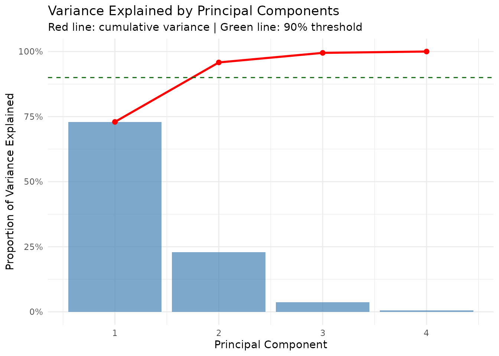
tidy_pca_screeplot() is the conventional scree plot:
tidy_pca_screeplot(pca)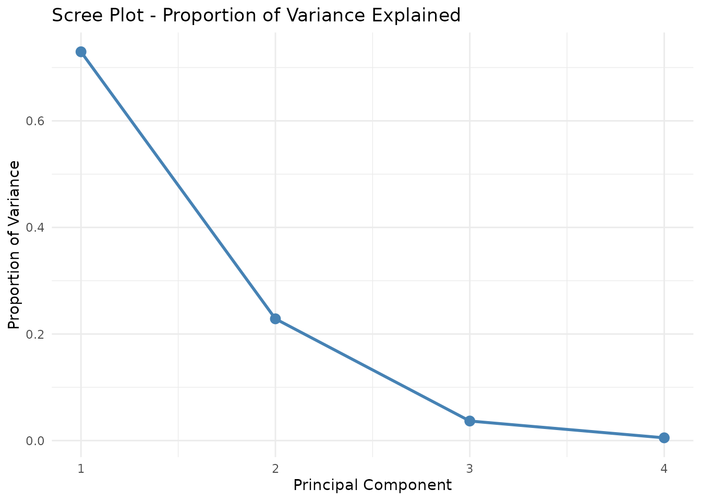
Scores back on the data
augment_pca() returns the original data with component
scores appended, so the labels you already have stay attached:
scored <- augment_pca(pca, iris, n_components = 2)
head(scored, 3)
#> Sepal.Length Sepal.Width Petal.Length Petal.Width Species PC1
#> 1 5.1 3.5 1.4 0.2 setosa -2.257141
#> 2 4.9 3.0 1.4 0.2 setosa -2.074013
#> 3 4.7 3.2 1.3 0.2 setosa -2.356335
#> PC2
#> 1 -0.4784238
#> 2 0.6718827
#> 3 0.3407664
ggplot(scored, aes(x = PC1, y = PC2, color = Species)) +
geom_point(size = 3, alpha = 0.7) +
labs(
title = "PCA of Iris",
x = paste0("PC1 (",
round(get_pca_variance(pca)$prop_variance[1] * 100, 1), "%)"),
y = paste0("PC2 (",
round(get_pca_variance(pca)$prop_variance[2] * 100, 1), "%)")
) +
theme_minimal()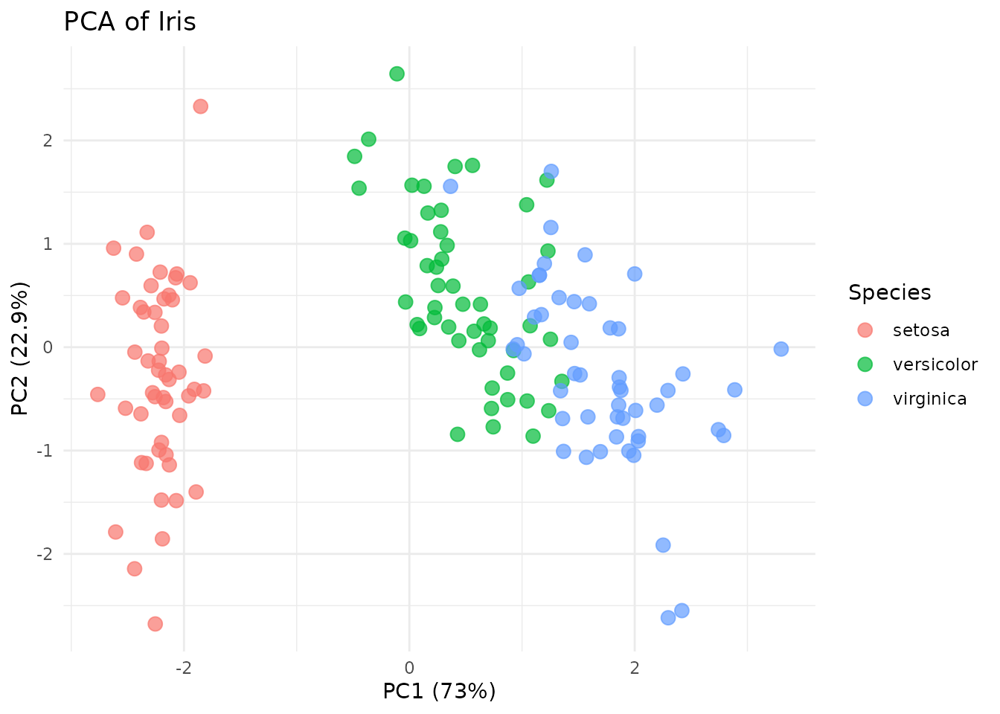
tidy_pca_biplot() overlays the loadings on the same
scatter, which is how you read what the components mean:
tidy_pca_biplot(pca, color_by = iris$Species)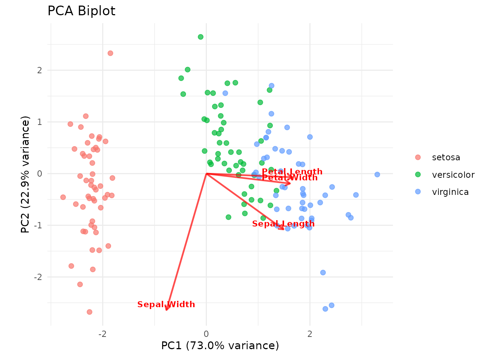
How Many Clusters?
Guessing k and checking the answer against labels you happen
to have is not a method. optimal_clusters() runs three
criteria at once.
opt <- optimal_clusters(iris[, 1:4], max_k = 8)
names(opt)
#> [1] "wss" "silhouette" "gap"
opt$wss
#> # A tibble: 8 × 2
#> k tot_withinss
#> <int> <dbl>
#> 1 1 681.
#> 2 2 152.
#> 3 3 78.9
#> 4 4 57.2
#> 5 5 46.4
#> 6 6 39.0
#> 7 7 34.3
#> 8 8 30.0
opt$silhouette
#> # A tibble: 7 × 2
#> k avg_sil_width
#> <int> <dbl>
#> 1 2 0.681
#> 2 3 0.553
#> 3 4 0.498
#> 4 5 0.489
#> 5 6 0.365
#> 6 7 0.359
#> 7 8 0.352
c(silhouette = attr(opt$silhouette, "optimal_k"),
gap = opt$gap$recommended_k)
#> silhouette gap
#> 2 6The three criteria disagree, which is normal and worth saying plainly: the elbow is a judgement call, silhouette favours well-separated compact clusters, and the gap statistic compares against a null of no structure. Silhouette says 2 here because versicolor and virginica overlap; the botanical answer is 3.
plot_elbow(opt$wss, suggested_k = 3)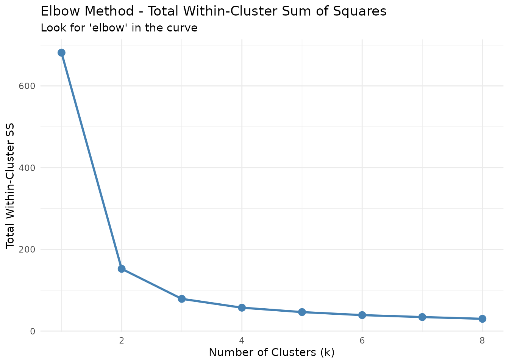
plot_gap_stat(opt$gap)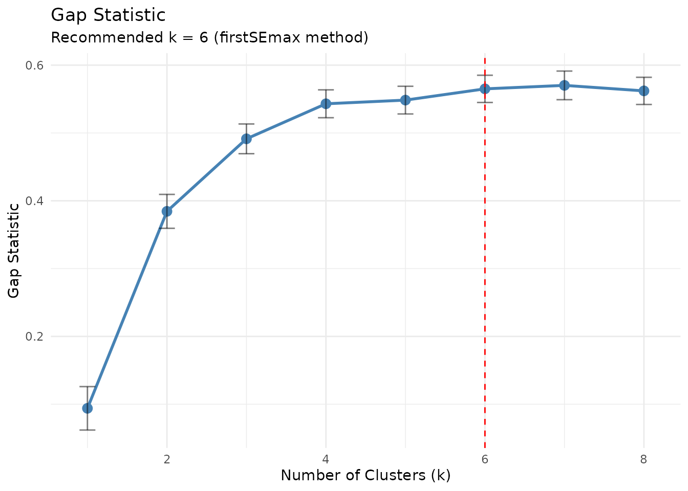
calc_wss() gives the within-cluster sums of squares on
their own if that is all you need:
calc_wss(iris[, 1:4], max_k = 6)
#> # A tibble: 6 × 2
#> k tot_withinss
#> <int> <dbl>
#> 1 1 681.
#> 2 2 152.
#> 3 3 78.9
#> 4 4 57.2
#> 5 5 46.4
#> 6 6 39.0K-means
km <- tidy_kmeans(iris[, 1:4], k = 3)
km$centers
#> # A tibble: 3 × 5
#> cluster Sepal.Length Sepal.Width Petal.Length Petal.Width
#> <int> <dbl> <dbl> <dbl> <dbl>
#> 1 1 5.90 2.75 4.39 1.43
#> 2 2 6.85 3.07 5.74 2.07
#> 3 3 5.01 3.43 1.46 0.246
km$clusters
#> # A tibble: 150 × 2
#> .obs_id cluster
#> <chr> <int>
#> 1 1 3
#> 2 2 3
#> 3 3 3
#> 4 4 3
#> 5 5 3
#> 6 6 3
#> 7 7 3
#> 8 8 3
#> 9 9 3
#> 10 10 3
#> # ℹ 140 more rowsaugment_kmeans() puts the assignment back on the
data:
iris_clustered <- augment_kmeans(km, iris)
table(Cluster = iris_clustered$cluster, Species = iris_clustered$Species)
#> Species
#> Cluster setosa versicolor virginica
#> 1 0 48 14
#> 2 0 2 36
#> 3 50 0 0
plot_cluster_sizes(km$clusters$cluster)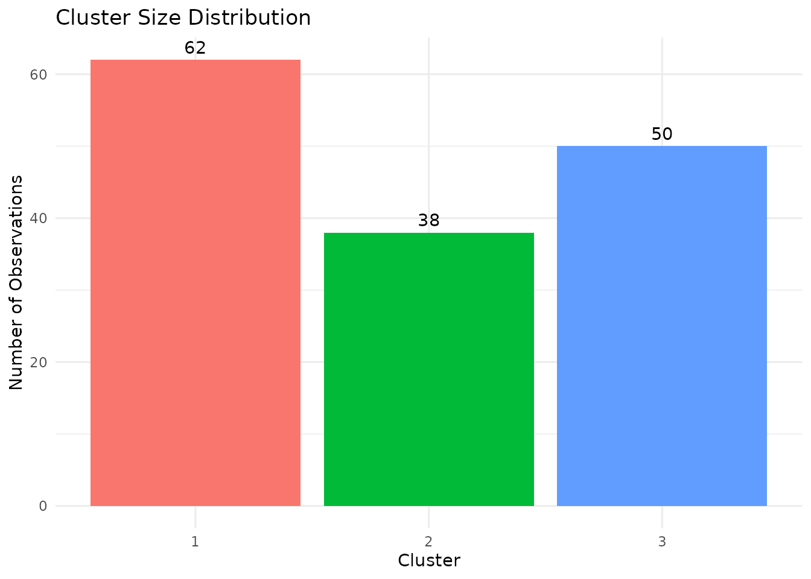
plot_clusters(iris_clustered, cluster_col = "cluster",
x_col = "Petal.Length", y_col = "Petal.Width")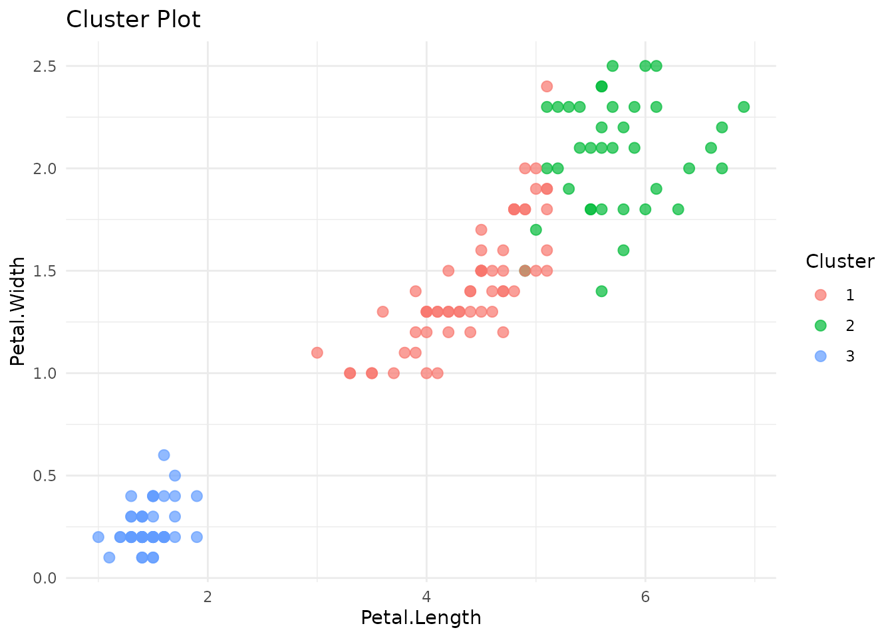
Was it a good clustering?
Silhouette width scores each observation on how much better it fits its own cluster than the next-nearest one. Values near 1 are comfortable, near 0 borderline, negative means the point is on the wrong side.
dist_mat <- tidy_dist(iris[, 1:4])
sil <- tidy_silhouette(km$clusters$cluster, dist_mat)
sil$avg_width
#> [1] 0.552819
sil$cluster_avg
#> # A tibble: 3 × 3
#> cluster n avg_sil_width
#> <dbl> <int> <dbl>
#> 1 1 62 0.417
#> 2 2 38 0.451
#> 3 3 50 0.798
plot_silhouette(sil)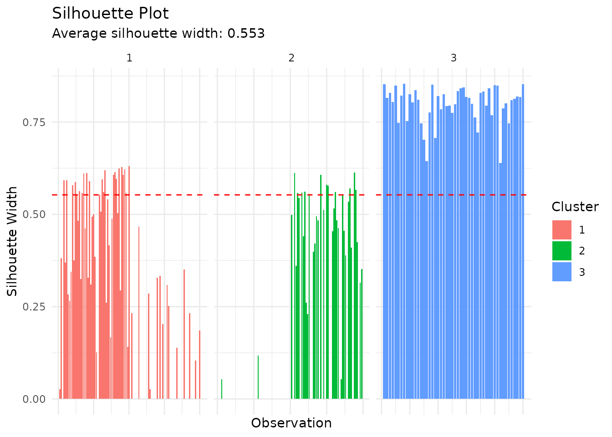
Cluster 1 is clean; the other two are the versicolor/virginica boundary, and their scores say so without needing the labels.
calc_validation_metrics() collects the summary numbers
in one row:
calc_validation_metrics(km$clusters$cluster, iris[, 1:4], dist_mat)
#> # A tibble: 1 × 7
#> k min_size max_size avg_size avg_silhouette min_silhouette total_wss
#> <int> <int> <int> <dbl> <dbl> <dbl> <dbl>
#> 1 3 38 62 50 0.553 0.0264 78.9PAM and CLARA
PAM picks actual observations as cluster centres, which makes it less sensitive to outliers than k-means and gives you a representative row rather than an average.
pam_result <- tidy_pam(iris[, 1:4], k = 3)
pam_result$medoids
#> # A tibble: 3 × 6
#> cluster medoid_index Sepal.Length Sepal.Width Petal.Length Petal.Width
#> <int> <int> <dbl> <dbl> <dbl> <dbl>
#> 1 1 8 5 3.4 1.5 0.2
#> 2 2 79 6 2.9 4.5 1.5
#> 3 3 113 6.8 3 5.5 2.1
pam_result$silhouette_avg
#> [1] 0.552819
table(Cluster = augment_pam(pam_result, iris)$cluster, Species = iris$Species)
#> Species
#> Cluster setosa versicolor virginica
#> 1 50 0 0
#> 2 0 48 14
#> 3 0 2 36CLARA samples rather than computing the full distance matrix, which is what makes it usable when n is large enough that an n × n matrix is not:
large_data <- iris[rep(seq_len(nrow(iris)), 10), 1:4]
clara_result <- tidy_clara(large_data, k = 3, samples = 5)
table(clara_result$clusters$cluster)
#>
#> 1 2 3
#> 500 380 620Hierarchical Clustering
tidy_hclust() builds the tree; cutting it is a separate
decision.
hc <- tidy_hclust(iris[, 1:4], method = "average")
plot_dendrogram(hc, k = 3)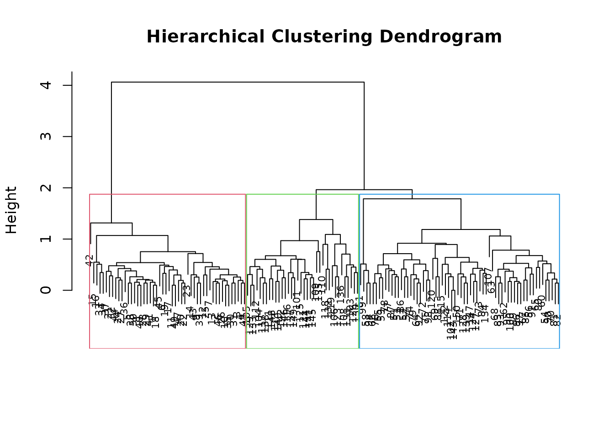
optimal_hclust_k() scores cut heights the way
optimal_clusters() scores k:
optimal_hclust_k(hc, method = "silhouette", max_k = 8)$optimal_k
#> [1] 2
cuts <- tidy_cutree(hc, k = 3)
head(cuts, 3)
#> # A tibble: 3 × 2
#> .obs_id cluster
#> <chr> <int>
#> 1 1 1
#> 2 2 1
#> 3 3 1
hc_data <- augment_hclust(hc, iris, k = 3)
table(Cluster = hc_data$cluster, Species = hc_data$Species)
#> Species
#> Cluster setosa versicolor virginica
#> 1 50 0 0
#> 2 0 50 14
#> 3 0 0 36Linkage matters more than most people expect. "average",
"complete", "single" and
"ward.D2" can produce different trees from the same
distances:
linkages <- c("single", "average", "complete", "ward.D2")
sapply(linkages, function(m) {
cl <- tidy_cutree(tidy_hclust(iris[, 1:4], method = m), k = 3)$cluster
max(table(cl))
})
#> single average complete ward.D2
#> 98 64 72 64Single linkage chains, so it puts almost everything in one cluster. That is a property of the linkage, not a finding about irises.
DBSCAN
DBSCAN finds arbitrarily shaped clusters and labels sparse points as
noise. It needs eps (the neighbourhood radius) and
minPts. Rather than guessing, suggest_eps()
reads it off the k-nearest-neighbour distance curve.
eps_suggestion <- suggest_eps(iris[, 1:4], minPts = 5)
eps_suggestion$eps
#> [1] 0.75757
plot_knn_dist(iris[, 1:4], k = 5)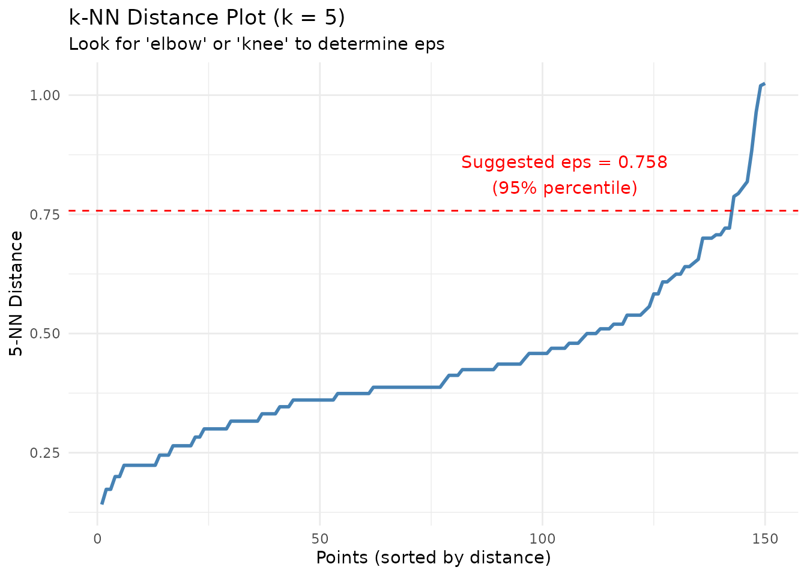
The elbow in that curve is where points stop having close neighbours, which is the radius you want.
db <- tidy_dbscan(iris[, 1:4], eps = eps_suggestion$eps, minPts = 5)
c(clusters = db$n_clusters, noise = db$n_noise)
#> clusters noise
#> 2 2
db_data <- augment_dbscan(db, iris)
table(Cluster = db_data$cluster, Species = db_data$Species)
#> Species
#> Cluster setosa versicolor virginica
#> 0 0 0 2
#> 1 50 0 0
#> 2 0 50 48Cluster 0 is noise, not a cluster.
explore_dbscan_params() sweeps the two parameters
together, which is more informative than tuning either alone:
explore_dbscan_params(
iris[, 1:4],
eps_values = c(0.4, 0.6, 0.8, 1.0),
minPts_values = c(4, 5, 10)
)
#> # A tibble: 12 × 5
#> eps minPts n_clusters n_noise prop_noise
#> <dbl> <dbl> <int> <int> <dbl>
#> 1 0.4 4 4 25 0.167
#> 2 0.6 4 3 5 0.0333
#> 3 0.8 4 2 2 0.0133
#> 4 1 4 2 0 0
#> 5 0.4 5 4 32 0.213
#> 6 0.6 5 2 9 0.06
#> 7 0.8 5 2 2 0.0133
#> 8 1 5 2 0 0
#> 9 0.4 10 3 83 0.553
#> 10 0.6 10 2 13 0.0867
#> 11 0.8 10 2 5 0.0333
#> 12 1 10 2 0 0Read prop_noise alongside n_clusters: a
setting that finds many clusters by discarding a third of the data has
not found structure.
Multidimensional Scaling
MDS places observations so that their plotted distances reproduce their distances in the original space. Unlike PCA it can work from any distance matrix, including non-Euclidean ones.
mds <- tidy_mds(iris[, 1:4], method = "classical", ndim = 2)
head(mds$config, 3)
#> # A tibble: 3 × 2
#> Dim1 Dim2
#> <dbl> <dbl>
#> 1 -2.68 0.319
#> 2 -2.71 -0.177
#> 3 -2.89 -0.145
plot_mds(mds, color_by = iris$Species, label_points = FALSE)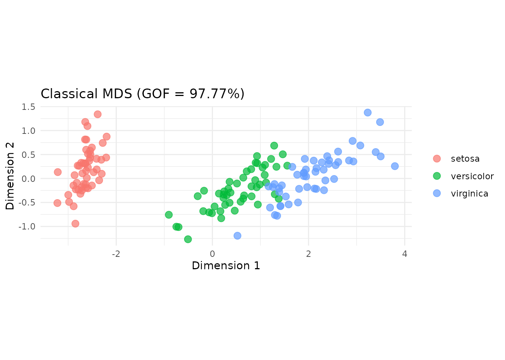
method also takes "metric" and
"nonmetric" (both via smacof), "sammon" and
"kruskal". The last two minimise a stress function by
dividing through the observed distances, so they need every pairwise
distance to be strictly positive. iris contains one duplicated row,
which is enough to stop them:
tidy_mds(iris[, 1:4], method = "sammon", ndim = 2)
#> Error:
#> ! method = "sammon" needs every pairwise distance to be positive, but 1 pair(s) of observations are identical: 102 and 143. Drop the duplicates, or use method = "classical", "metric" or "nonmetric", which tolerate them.Drop the duplicates and they run:
distinct_iris <- iris[!duplicated(iris[, 1:4]), 1:4]
sammon <- tidy_mds(distinct_iris, method = "sammon", ndim = 2)
sammon$stress
#> [1] 0.004015053Stress is the number to check before reading anything into a non-metric layout: below about 0.05 the picture is a faithful rendering of the distances, and above about 0.2 it is decoration.
Comparing Clusterings
compare_clusterings() scores several partitions of the
same data side by side.
comparison <- compare_clusterings(
list(
kmeans = km$clusters$cluster,
pam = pam_result$clusters$cluster,
hclust = cuts$cluster,
dbscan = db$clusters$cluster
),
iris[, 1:4],
dist_mat
)
comparison
#> # A tibble: 4 × 8
#> method k min_size max_size avg_size avg_silhouette min_silhouette
#> <chr> <int> <int> <int> <dbl> <dbl> <dbl>
#> 1 kmeans 3 38 62 50 0.553 0.0264
#> 2 pam 3 38 62 50 0.553 0.0264
#> 3 hclust 3 36 64 50 0.554 -0.0901
#> 4 dbscan 2 2 98 50 0.512 -0.639
#> # ℹ 1 more variable: total_wss <dbl>
plot_cluster_comparison(
iris[, 1:4] %>%
mutate(kmeans = km$clusters$cluster, hclust = cuts$cluster),
cluster_cols = c("kmeans", "hclust"),
x_col = "Petal.Length",
y_col = "Petal.Width"
)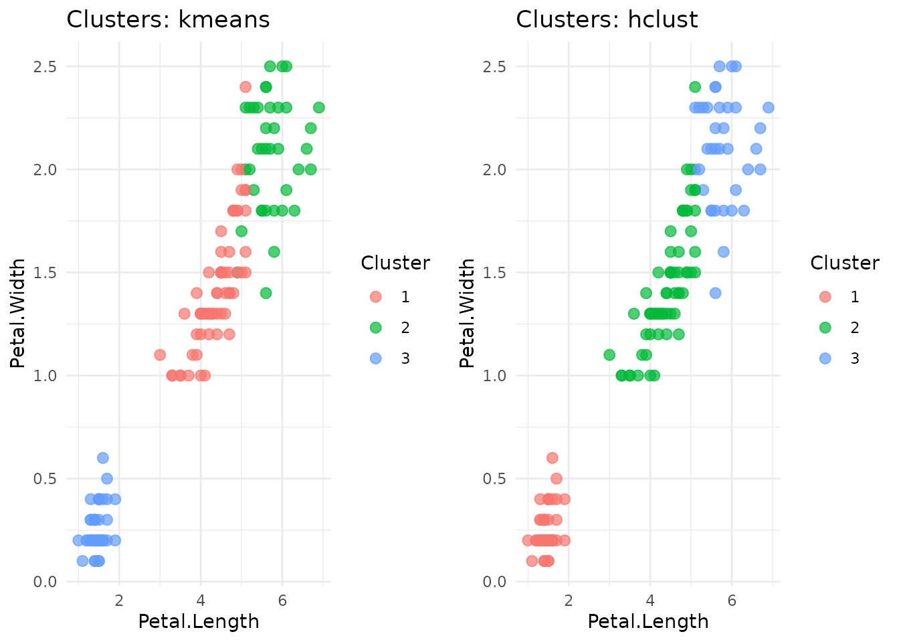
The distance metric is a choice too. compare_distances()
computes several so you can see whether your conclusion depends on
it:
names(compare_distances(iris[, 1:4]))
#> [1] "euclidean" "manhattan" "maximum"
plot_distance_heatmap(dist_mat)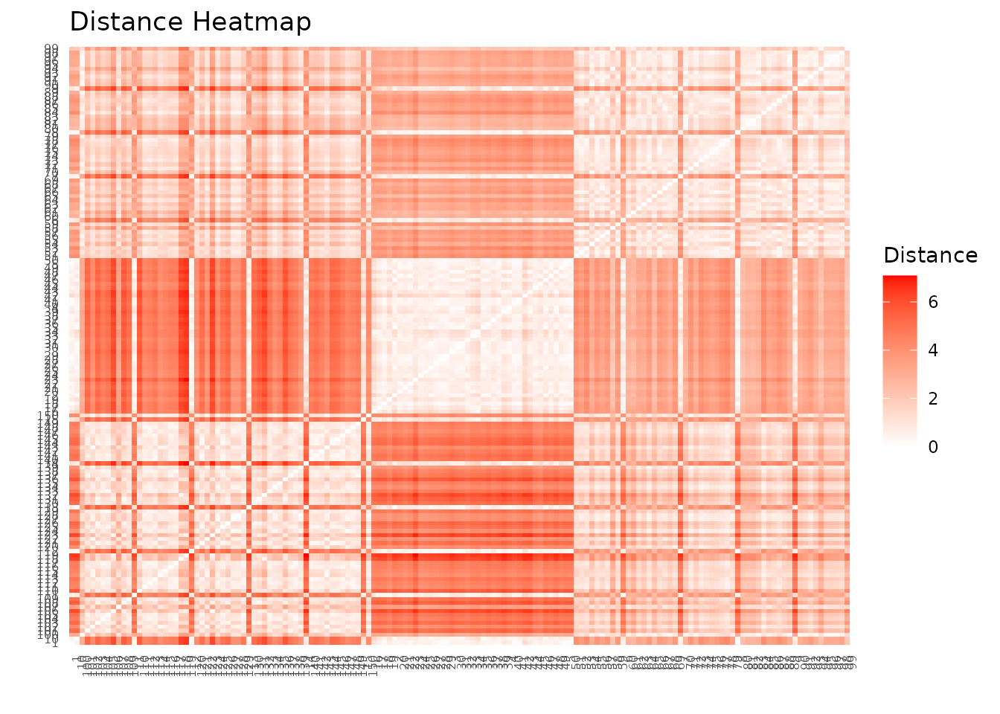
Block structure on the diagonal is what a real cluster looks like in a distance matrix.
A Worked Sequence
Putting the pieces in the order they belong:
data_matrix <- standardize_data(iris[, 1:4])
# 1. How many clusters does the data support?
choice <- optimal_clusters(data_matrix, max_k = 8)
k <- attr(choice$silhouette, "optimal_k")
k
#> [1] 2
# 2. Cluster at that k
final_km <- tidy_kmeans(data_matrix, k = k)
# 3. Score the result before believing it
final_sil <- tidy_silhouette(final_km$clusters$cluster, tidy_dist(data_matrix))
final_sil$avg_width
#> [1] 0.58175
# 4. Attach the assignment and look at it
final_data <- augment_kmeans(final_km, iris)
table(Cluster = final_data$cluster, Species = final_data$Species)
#> Species
#> Cluster setosa versicolor virginica
#> 1 50 0 0
#> 2 0 50 50
plot_clusters(final_data, cluster_col = "cluster",
x_col = "Petal.Length", y_col = "Petal.Width")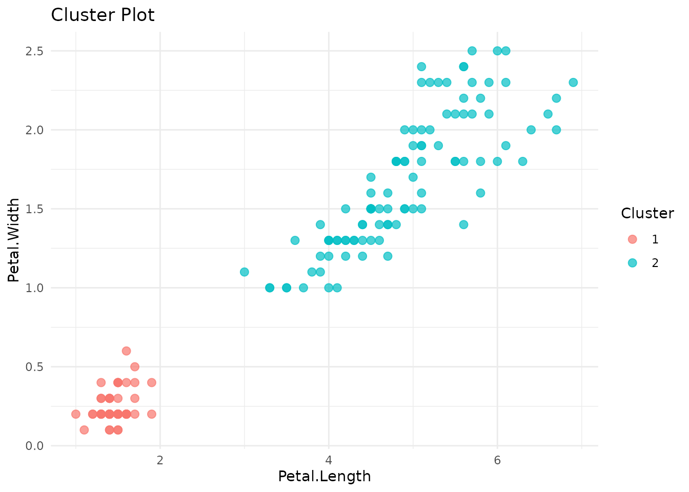
Silhouette chose 2, and the table shows what that means: setosa separated, the other two species merged. That is the honest reading of this data at this metric — the third cluster exists botanically but is not well separated in these four measurements.
Function Reference
| Task | Function |
|---|---|
| Prepare |
standardize_data(), tidy_dist(),
compare_distances()
|
| Choose k |
optimal_clusters(), calc_wss(),
tidy_gap_stat(), optimal_hclust_k()
|
| Reduce |
tidy_pca(), tidy_mds()
|
| Cluster |
tidy_kmeans(), tidy_pam(),
tidy_clara(), tidy_hclust(),
tidy_dbscan()
|
| Attach results |
augment_pca(), augment_kmeans(),
augment_pam(), augment_hclust(),
augment_dbscan()
|
| Validate |
tidy_silhouette(),
calc_validation_metrics(),
compare_clusterings()
|
| Tune DBSCAN |
suggest_eps(), plot_knn_dist(),
explore_dbscan_params()
|
| Plot |
plot_elbow(), plot_silhouette(),
plot_gap_stat(), plot_clusters(),
plot_cluster_sizes(), plot_dendrogram(),
plot_mds(), plot_distance_heatmap(),
plot_variance_explained()
|
| Accessors |
get_pca_variance(), get_pca_loadings(),
tidy_cutree()
|
Association rules have their own vignette:
vignette("market-basket").